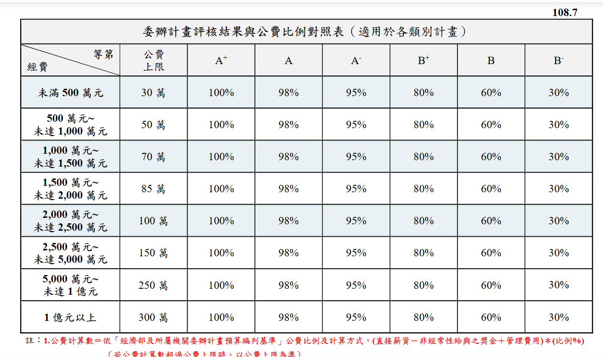
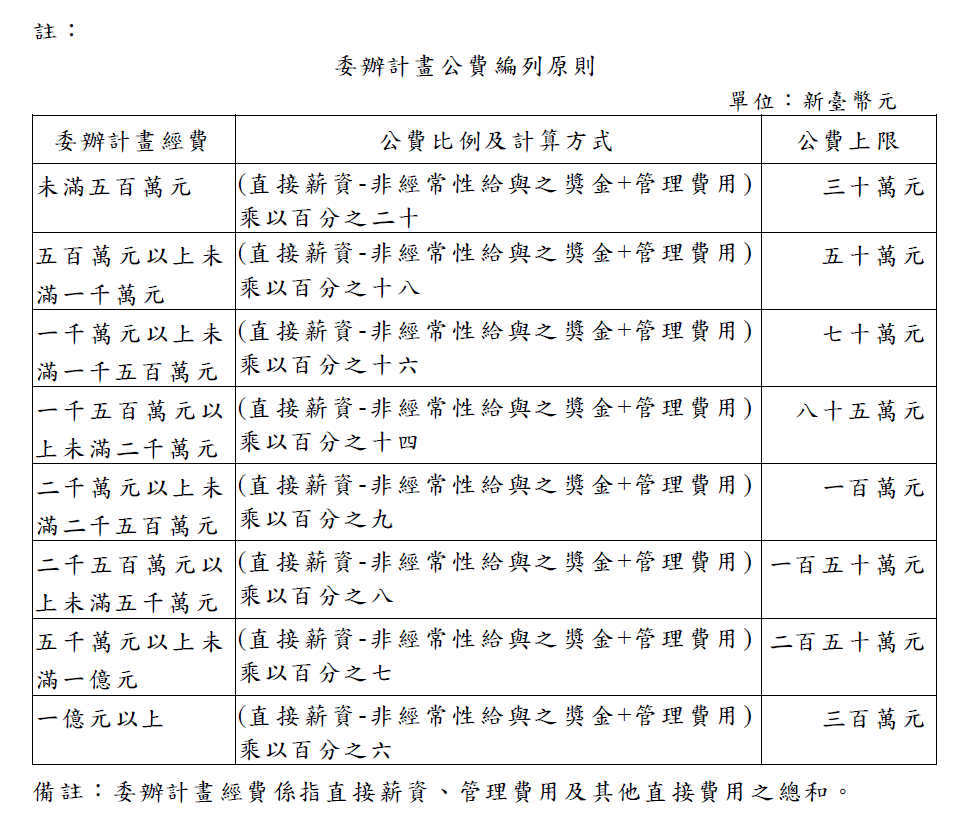

2.1
投標作業
能源署委辦計畫：新興計畫採限制性招標方式辦理，延續性計畫採密件公文通知，投標作業通常於9月啟動RFP規劃，12月初前辦理投標作業。以下為主要步驟：
投標流程步驟
- 取得招標資訊：能源署9月由計畫承辦人員轉知招標訊息，需與所轄單位商訂規格需求。
- 洽案系統登載：完成「商情與客戶合作管理 (CRM)→ 標案系統」資訊登載，計畫基本資料建置及借用印程序詳見各欄位資訊。
- 組成投標團隊：確認計畫主持人、協同主持人及各分項負責人，盤點可投入之研究人力。
- 撰寫投標計畫書：依據需求說明書（RFP），撰寫計畫書及工作項目，啟動分工撰寫及彙整。需求說明書最終版本需依據標案公告為準。協助投標計畫書彙整與撰寫（含計畫架構圖、人月配置、計畫經費明細等）。
- 編列經費預算表：能專可依ISTI費率編列人事費（以38至41％為區間），業務費、差旅費、設備費等各項經費依據標案公告編列，並注意能源署全時人數及經費編列上限規範。預算編列表另專章說明。
- 準備團隊資歷文件：彙整及更新計畫主持人與協同主持人之學經歷、相關計畫執行經驗、近年著作清單，以及計畫執行能力（ISIT概述、計畫管理能力等）（全程計畫書及投標簡報使用）。
- 院內簽核與送件：完成院內標案系統（新興期程標案需經簽核至院長核准，需注意時程），於截止日前需備妥投標文件（含計畫書）送達指定地點。
- 評選簡報（投標審查）：完成送件後繼續彙整投標簡報，並安排計畫主持人率團出席審查會議，進行口頭簡報與委員答詢。
提醒：計畫書格式之格式與頁數限制每年可能微調，務必詳閱當年度招標文件之規定。歷年投標資料存放於Teams路徑，可作為參考範本。
注意1：投標文件之經費編列須符合「經濟部及所屬機關委辦計畫預算編列基準」原則，人事費比例上限、管理費率等皆有明確規範，編列前請先確認最新版本規定。
注意2：預算編列可參考前一年度IBA動支概況並進行任務資源盤點，以利資源配置。
2.2
預算編列說明
投標計畫書之經費預算須符合「經濟部及所屬機關委辦計畫預算編列基準」，並依能源署當年度招標文件之規定辦理。以下說明各主要科目之編列原則。
計畫經費總表
- 管理費：依 ISTI PM 公告核定費率，管理費採人事費比例以 25% 為區間，依據年度公告為準。
- 公費：依據經濟部經費編列及委辦計畫評核等第(詳見PMIS計畫書設定最下方)。


- 注意事項：未稅金額、取整數等需留意。
人事費
- 直接薪資：依 ISTI 核定費率表編列（費率依據PM公布次一年度費率為準），人事費佔計畫總經費比例以 38%～41% 為區間，過低影響管理費，過高可與委辦單位商議。表格均已設定excel樞紐格式記得更新。
- GRB資料及樞紐：依據表格設定補足必要資訊。需確認經濟部職級，需換算為計畫書使用表格
- 人月計算：整體計畫人月配置需與其他PM確認協商。人月與人年換算需留意小數點後兩位的誤差，需配妥。全時人力（吃滿12人月需預留）。人力投入loading 建議依據所屬任務與領域合理配置
- 注意事項：派遣人力建議 116年 納入人月列管。
注意：人事費占比、管理費比例等每年度規定可能調整，編列前務必以當年度招標公告及「預算編列基準」最新版本為準。
差旅費
- 國內差旅：依據113/114年查帳，附駕派車列為「租車費」。
- 國外差旅：預算階段依據目的地及當時國際情勢，粗抓整數旅費。須說明出訪必要性，並符合能源署對國外出差之審核規定（避免僅出國論文發表等）。
業務費
- 分包研究費：如需專業研究工作分包，需列明委外項目與金額，並附必要性說明，並配合計畫書分包研究相關內容撰寫。
- 資料蒐集費：大型資料採購有必要延續費用需分攤，並盤點當年度需採購資料。
- 委託勞務費：如需大型委外調查、數據蒐集或專業服務，需列明委外項目與金額，並附簡要說明。
- 臺北辦公室相關費用：依實際辦公室需求盤點，應與工作項目相符。
- 資訊使用費：企推必要支出，依據年度人均推估。
- 注意：大型採購項目均需詳列名稱。
設備使用費
- 企推設備使用費認列，需依據人員投入人月等比例攤提。
編列建議：建議先盤點前一年度 IBA 動支概況，作為本年度預算配置之參考基準。各科目預算應保留合理彈性，以因應議價階段之調降。詳細預算表格範本存放於 Teams，可參閱歷年版本。
2.4
簽約與計畫啟動
議價完成當下，能源署事務科會提供契約文件電子檔（近兩年由於事務科人力變動，提供文件建議及早檢查）即進入簽約階段，同時需啟動一系列計畫管理系統之登錄與內部行政作業，確保計畫順利開展。
簽約流程
- 契約文件確認：收到能源署寄送之契約草案後，逐條核對契約製作內容（議價當日帶回）。
- 保密同意書簽核：所有執行人員（名列正班人力，及派遣人員）簽署並先辦理另外用印。
- 契約書製作及簽核：依據事務科要求辦理契約書製作，並送院內行政流程進行用印及發文，需經所長核准。
- 回送簽署契約：完成用印後將契約正本回送能源署，2正3副，能源署回執正本1份。
注意：契約書相關變動與校正，配合事務科及承辦要求辦理，相關電子檔需一併修正（光碟）。
計畫啟動待辦清單
議價完成後
| 項目 |
說明 |
時限 |
契約依據 |
| EAPMIS 新帳號申請 |
至能源署計畫管理系統申請新帳號並完成計畫基本資料建置 |
議價生效日後 |
§8(二十) |
| 計畫代號開立 |
依議價結果修正各分項經費，建立經費分配表；於預算動支系統建立年度預算架構，設定各科目額度 |
簽約後儘速 |
院內規定 |
| 保密同意書簽署 |
所有執行人員（正班人力及派遣人員）簽署保密同意書並辦理用印 |
契約書製作前完成 |
契約要求 |
簽約後
| 項目 |
說明 |
時限 |
契約依據 |
| GRB 系統登錄 |
至政府科技計畫管理系統完成計畫起始登錄，須配合研究進度定期更新 |
簽約後 12 個工作日內 |
§8(十九) |
| EAPMIS 簽約版計畫書送審 |
上傳簽約版計畫書至 EAPMIS 平台送審 |
機關檢還鈐印契約公文發文日次日起 15 個工作日內 |
§8(二十) |
| 院內契約履約系統建置 |
建立院內契約履約計畫（CRM），設定查核點與交付物 |
簽約後儘速 |
院內規定 |
| 內部 Kick-off 會議 |
召開計畫啟動會議，確認分工、時程與管考機制 |
簽約後儘速 |
— |
| 資通安全自評表 |
交付資通安全項目自評表（含第三方驗證證書或資通安全維護計畫） |
專案起始後 60 日內 |
§16(二十一) |
注意：GRB 與 EAPMIS 之起始登錄有嚴格的時限要求（分別為 12 個工作日及 15 個工作日），逾期依 §12 計算逾期違約金（每日契約價金總額 0.13‰），請務必於簽約後儘速完成。